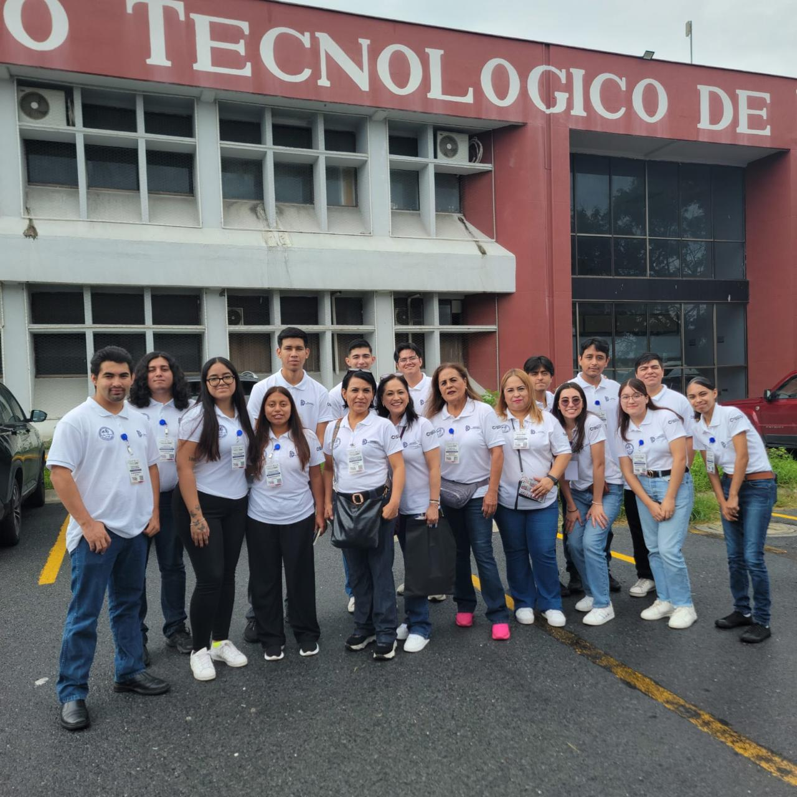

Formar profesionistas líderes, analíticos, críticos y creativos con visión estratégica y amplio sentido ético, capaces de diseñar, implementar y administrar infraestructura computacional para aportar soluciones innovadoras en beneficio de la sociedad, en un contexto global, multidisciplinario y sustentable.